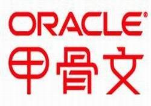

朴然
I'm 算法工程师 | 待定工程师
- 男 / 1997.11.19
- 中国石油大学（华东） · 信息与计算科学
- 本科 / 2020年毕业
实习经历
甲骨文软件有限公司(烟台)
2018.07 至 2018.08与团队导师参与前端开发，包括：
- 前端设计，完成网页设计项目，组内技术讨论，成果展示
- 模仿世界杯官网，设计世界杯主题页面，以及实现数据可视化功能
项目经历
以下是我参与的开源项目与学习总结，部分实习涉密项目未公开KubeFATE 2020.4-2020.11 基于R 语言的文本分析 (大三)
- 参与开源项目FATE联邦学习框架
- 通风分期预测医疗项目与机器学习结合，分析日志解决bug
- FATE文档总结Docker与服务器部署
- 对文本进行预处理和分割，对比词库查找出词汇的分布及频率，利用SVM 进行文本分类
- 基于统计和机器学习的方法:HMM,CRF等，重要程度排序算法TF-IDF、TextRank等
- 文本处理中还尝试了很多其他的方法，如词性识别、观点抽取、文本分类.........
比赛经历
- 2017.2 美国大学生数学建模竞赛二等奖 论文+编程+建模
- 2018.9 参加全国大学生数学建模大赛 并获得二等奖
- 2019.6 参加泰迪杯数据挖掘竞赛 并获得优秀奖
掌握技能
- 熟知C/C++ 基本语法与知识，掌握C++11 STL库，了解泛型编程
- 了解C++ 网络编程，C++ socket编程
- 了解C++ 多线程编程，最近着手熟悉服务器开发项目
- 用Python处理数据，机器学习算法应用，以及自动化脚本编写
- Python写过爬虫，了解基于Python的后端框架
- 熟悉tensorflow框架和keras库，熟悉Python常用库
- 熟悉MATLAB常用数值模拟包，以及微分方程数值计算方法
- 常用MATLAB参加数模比赛，数据分析
- 熟悉Linux系统开发环境
- 有过Linux云服务器和私有服务器维护经验
- 熟悉Docker的使用
- 掌握关系型数据库基本概念与SQL
- 资深初学者，弹了十多年了